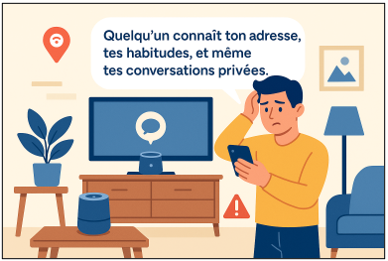

Séance 1 (correction) : Une maison connectée... mais à quel prix
Séance 1:Une maison connectée... mais à quel prix?
À la maison, Léo utilise une enceinte connectée pour écouter de la musique, contrôler les lumières et demander de l’aide à une IA générative pour ses devoirs. Il a aussi activé la géolocalisation sur son téléphone pour recevoir des recommandations personnalisées.
Un jour, ses parents reçoivent un message étrange : une personne prétend connaître leur adresse, leurs habitudes, et même des extraits de discussions privées.
Léo ne comprend pas ce qui a pu se passer. Il se souvient pourtant avoir cliqué sur "Accepter" lorsqu’on lui a demandé d’autoriser certains paramètres. Il pensait que c’était sans danger.

Mes constats, mes observations :
Mon enceinte connectée m’écoute même quand je parle / On me demande souvent d’activer la géolocalisation / Parfois, je reçois des pubs sur des sujets dont j’ai parlé juste avant avec mes amis.
Mon problème à résoudre
Comment rester en sécurité avec les outils numériques du quotidien ?
Mes idées pour le résoudre
Créer des mots de passe compliqués, ne pas partager mes données, ne pas cliquer sur les pubs, désactiver sa géolocalisation quand je peux, se méfier des messages suspects …
Les idées retenues pour résoudre le problème
Ne jamais partager d’informations personnelles sensibles (adresse, numéro de téléphone, photos privées) sur des sites ou applis qu’on ne connaît pas